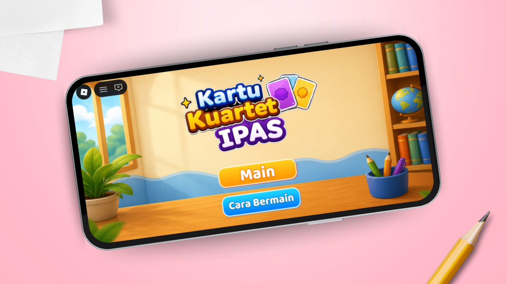
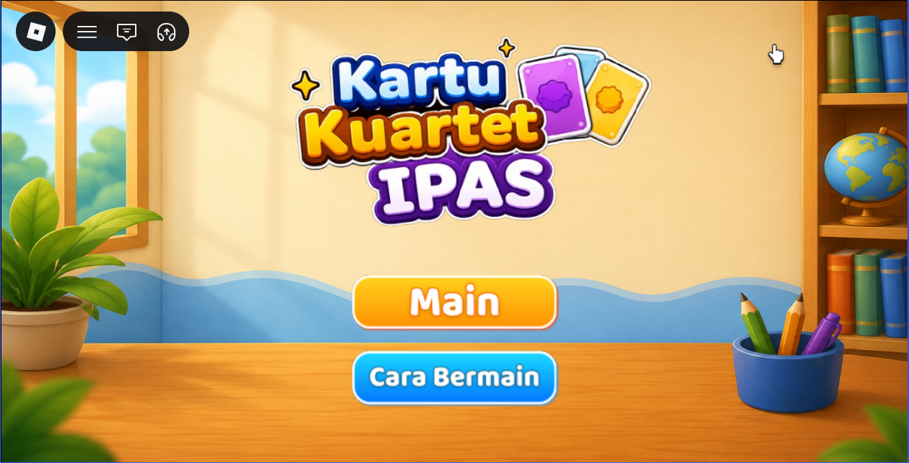
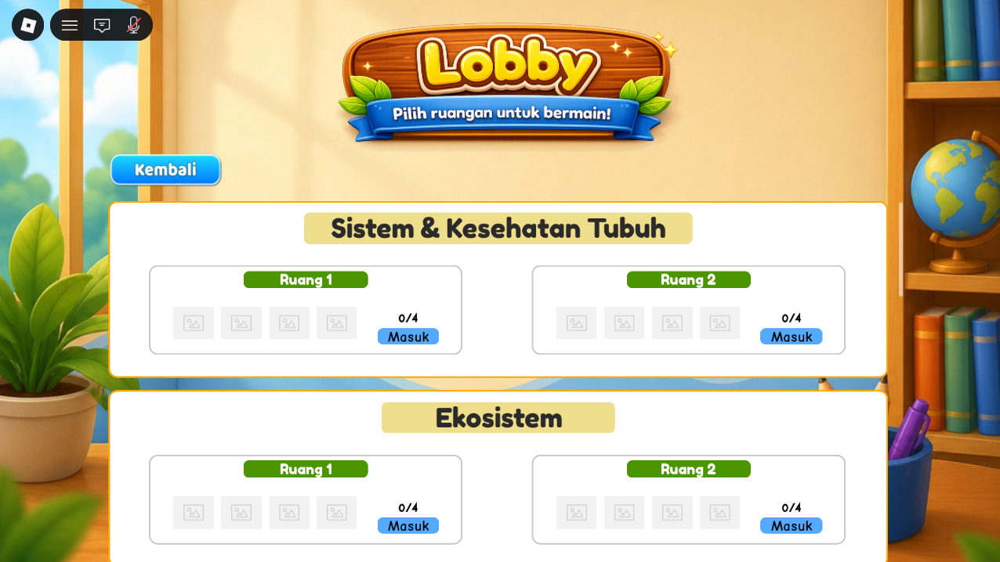
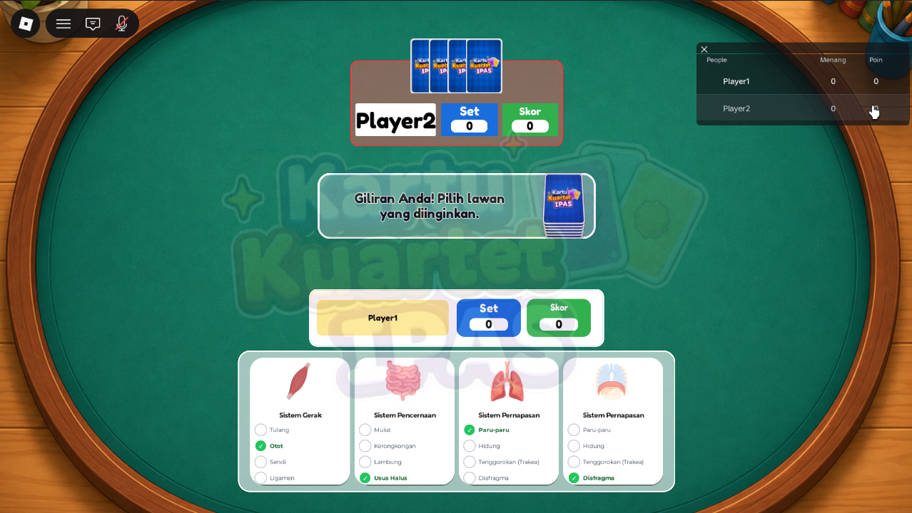
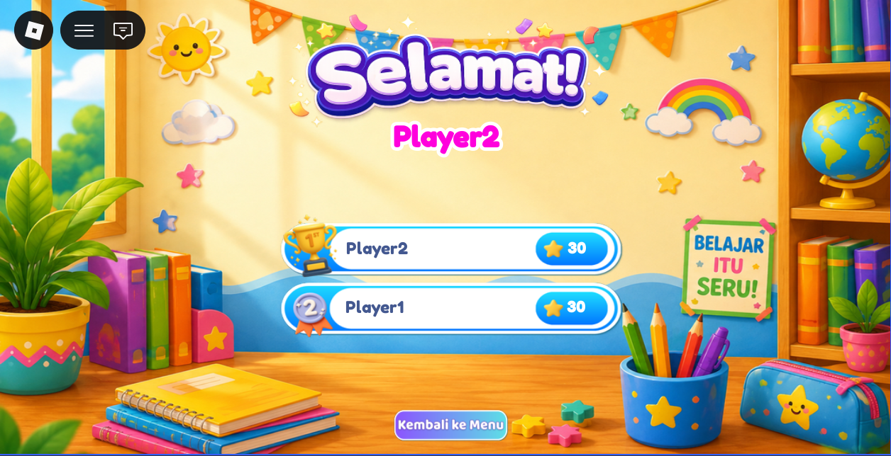

A Multiplayer Educational Quartet Card Game for Elementary School IPAS

Kartu Kuartet IPAS is a multiplayer learning game built with Roblox Studio and Luau to support IPAS (science and social studies) learning for elementary school students. It adapts the traditional quartet card game into a digital experience where players collect and group cards based on related concepts.
The project was developed as an undergraduate thesis using the ADDIE model, combining game development, educational content design, functional testing, and user evaluation.
IPAS learning is still dominated by conventional methods, which can limit interaction and active participation. This project explores how a digital multiplayer card game can support IPAS learning through visual content, card collection, concept grouping, and interaction between players.
Offer a more interactive learning experience through game mechanics.
Support recognizing and grouping basic IPAS concepts through quartet cards.
Eight IPAS Phase C categories, each grouped into sets of four related items. The grouping activities follow the unistructural and multistructural levels of the SOLO Taxonomy.




ServerScripts run the game logic, LocalScripts handle each player's UI, and ModuleScripts hold shared data and functions. RemoteEvents in ReplicatedStorage connect them. Critical logic runs on the server to keep game state consistent across players.
A RoomManager module creates 16 rooms: 8 IPAS categories with 2 rooms each, up to 4 players per room. Joining is validated on the server: the room must exist and have space, and the player must not already be in another room.
GameManager randomizes the turn order and owns turn state on the server, broadcasting it with an UpdateTurn event. A card request is accepted only from the active player, then matched against the target player's hand.
A nested CardData structure (category, subcategory, item) feeds a DeckManager that shuffles the deck three times and deals 4 cards per player. The server then checks for completed sets and updates scores.
Identified the learning context, target users, and relevant IPAS learning concepts.
Designed the game concept, card mechanics, system flow, and user interface.
Implemented the game components and gameplay logic in Roblox Studio using Luau.
Ran a gameplay trial with 30 sixth-grade elementary school students.
Evaluated functionality (black-box testing), user experience (GUESS-18), learning motivation (IMI), and conceptual understanding (pretest–posttest with N-Gain).
Functional results are reported separately from the evaluation with students, so technical success is not mixed up with learning effectiveness.
Black-box testing across 7 main function groups. All tested functions worked as designed.
GUESS-18 average from 30 sixth-grade students. Educational Value scored highest, at 4.57 / 5.
Intrinsic Motivation Inventory (IMI) average from 30 respondents.
Pretest–posttest average from the 26 of 30 students whose N-Gain could be computed. Limited gain after a single play session.
The average N-Gain was 0.19, which falls in the low category under Hake's criteria. Four students had a perfect pretest, so their N-Gain could not be computed. Seven students scored lower on the posttest than on the pretest.
The thesis links this partly to the game being played in a single session, which gave students no chance to practice repeatedly. The game worked as designed and drew positive motivational responses, but improving conceptual understanding still needs further testing and development.